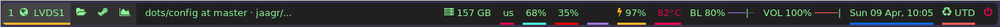

Possibly a break day. Playing around with Polybar and compiling a list of topics to be reviewed during the next few weeks.
to-check: code, mainly to-read: posts, articles, guides, things to read to-watch: videos, video courses, things to watch
to-check jaagr/dots/.config/polybar/config
Shaping the new bar:

Till now Polybar seems more stable than Yabar. Also, has workspace and desktop panel for bspwm and i3 and workspace module for EWMH compliant window managers. For Yabar exists workspace.py, a nice but limited option.
I will continue checking both the projects.